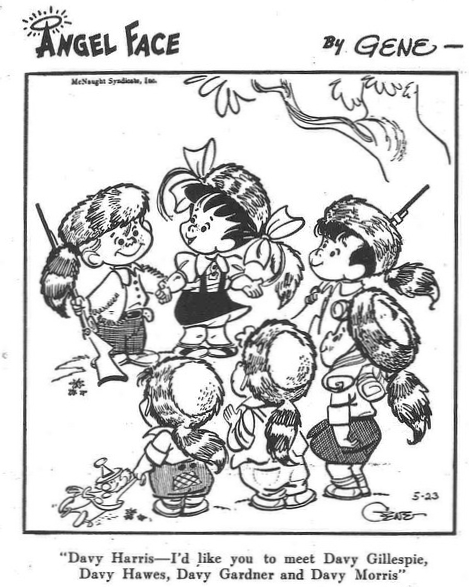
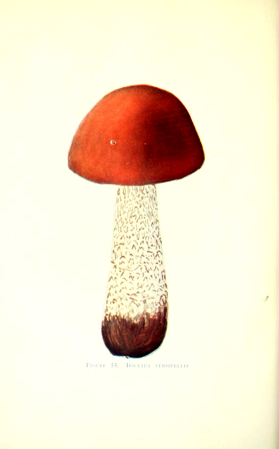

A comic strip is entitled Angel Face by Gene. The comic shows an outdoor
scene with a girl speaking to a boy who is standing beside her. They face
three boys and a girl. All are wearing coon-skin caps. The comic reads:
"Davy Harris — I'd like you to meet Day Gillespi, Davy Hawes, Davy
Gardner and Davy Morris"
A scientific illustration is entitled Figure 55. Boletus Veripellis. The
illustration shows a color drawing of a mushroom. It has a broadly convex
brick red cap and a stipe which is log and slender, white and covered with
small black scales.